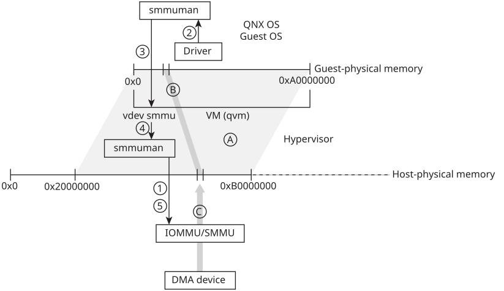

The smmuman service is required to support pass-through DMA devices in a QNX hypervisor system.
In a QNX hypervisor system, the smmuman service is required, not just
to program the DMA device memory regions and permissions into the board IOMMU/SMMUs,
but also to manage guest-physical memory to host-physical memory translations and
access for DMA devices passed through to a guest running in a hypervisor VM (see
SMMUMAN in a QNX hypervisor guest
in the SMMUMAN Architecture
chapter).
Each VM (qvm process instance) in the hypervisor host configures the smmuman service to program the board IOMMU/SMMUs to limit the host-physical memory to which DMA devices passed through to its guest have access. Any DMA device passed through to a guest is limited to the host-physical memory region(s) assigned to that VM in its configuration (see the QNX Hypervisor User's Guide).
This configuration protects the hypervisor host and guests running in other hypervisor VMs from errant DMA devices in the guest, but it doesn't protect the guest from its own DMA devices (DMA devices passed through to that guest).
The guest must configure its own smmuman service with the memory regions and permissions it requires for each pass-through DMA device it controls. The smmuman service running in the guest uses the smmu virtual device (vdev-smmu.so) to pass on these memory regions and permissions to the smmuman service running in the host, which in turn programs the board IOMMU/SMMUs.

In the hypervisor host, the VM (qvm process instance) that will host the guest uses the smmuman service to program the IOMMU/SMMU with the memory range and permissions (A) for the entire physical memory regions that it will present to its guest (e.g., 0x20000000 to 0xB0000000).
This protects the hypervisor host and other guests if DMA devices passed through to the guest erroneously or maliciously attempt to access their memory. It doesn't prevent DMA devices passed through to the guest from improperly accessing memory assigned to that guest, however.
The DMA device's access to memory (C) is now limited to the region and permissions requested by the DMA device driver in the guest (B), and the guest OS and other components are protected from this device erroneously or maliciously accessing their memory.